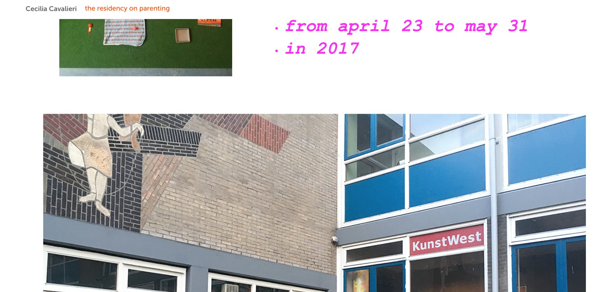
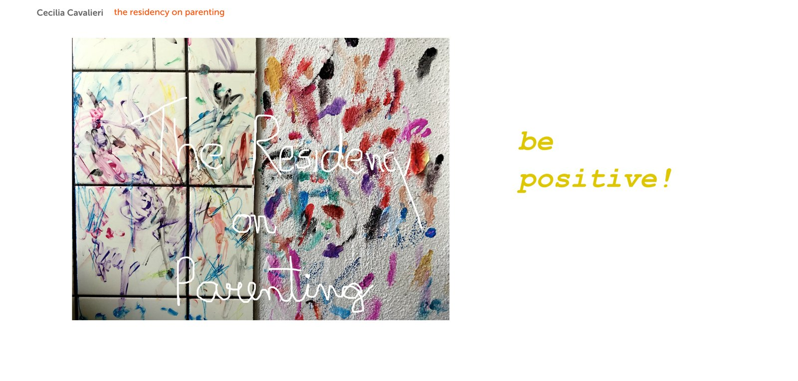
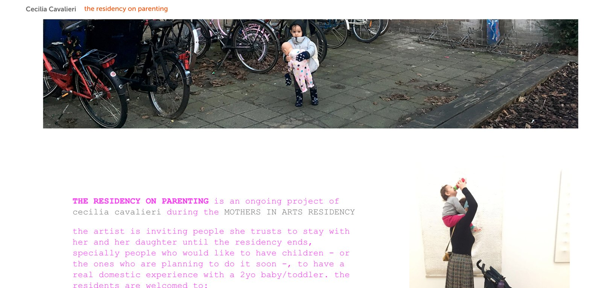
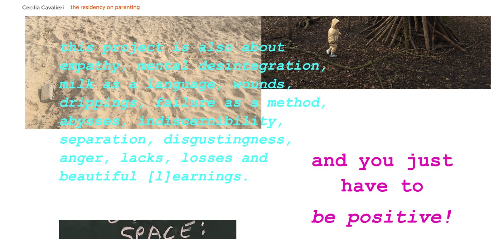
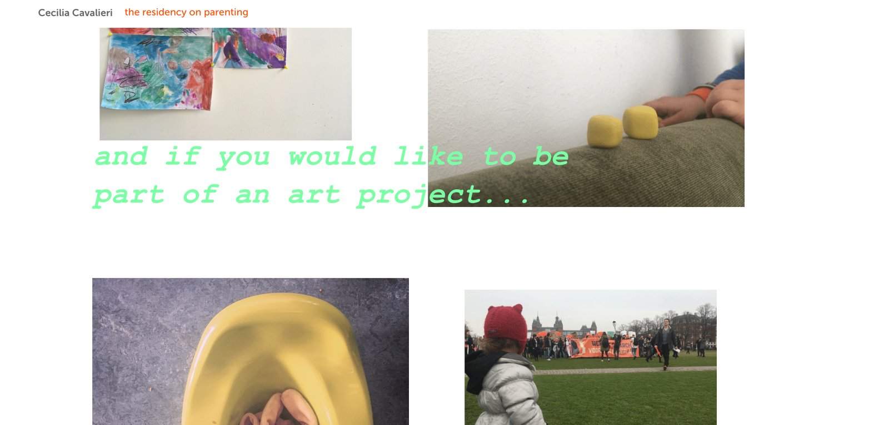
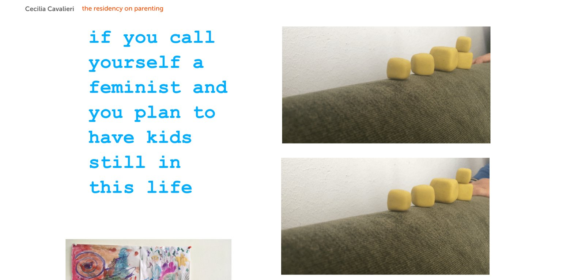
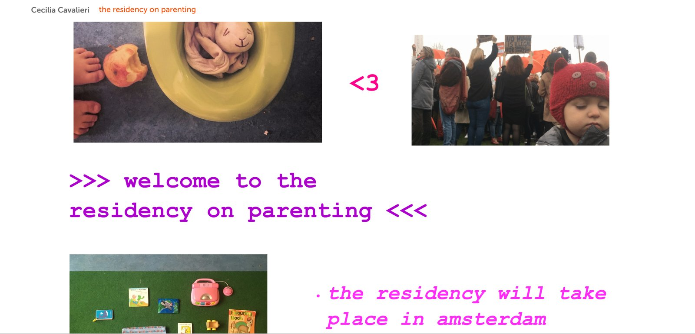
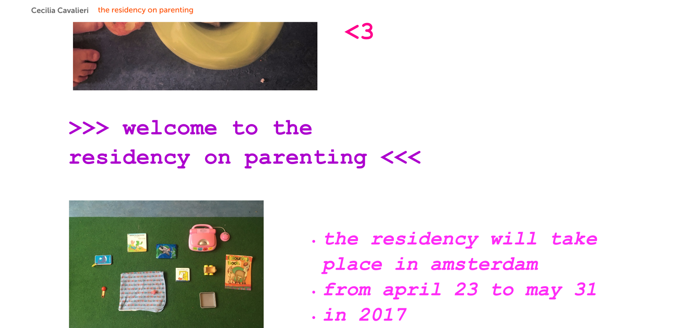
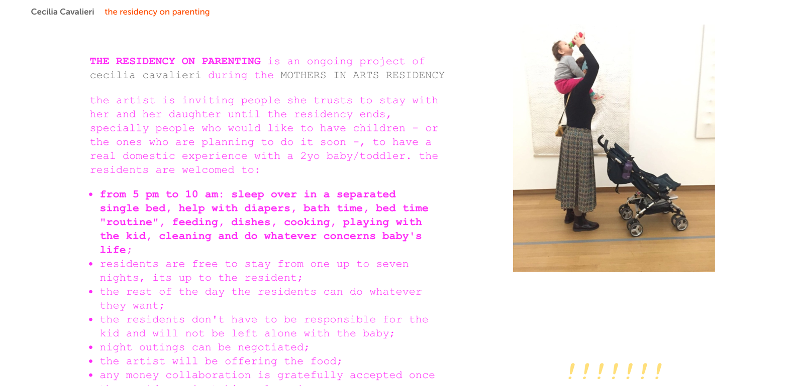
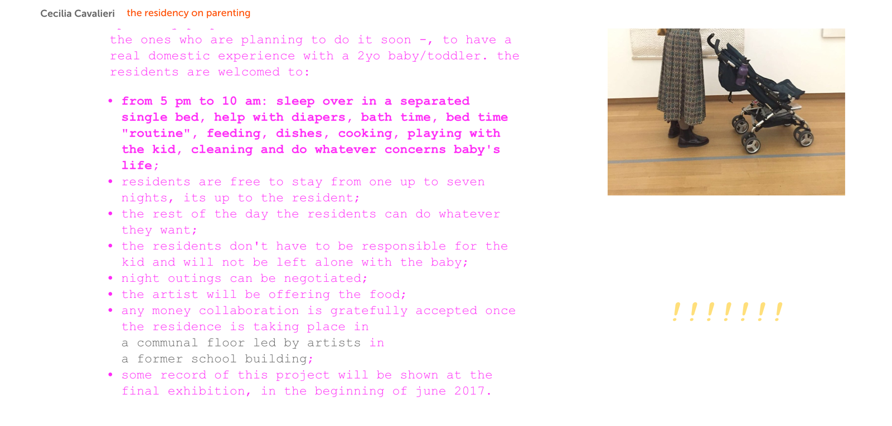

the residency on parenting
the residency on parenting
www.salon.io/cecilia-cavalieri
2017
a residência na residêcia: um projeto que convocou e recebeu artistas para viver comigo e minha filha durante o período da MOTHER IN ARTS residency, especialmente os que gostariam de ter filhos - ou aqueles que estavam planejando fazê-lo em breve -, a ter uma experiência doméstica real com um bebê de 2 anos (this project invited artists to stay with me and my daughter during the MOTHERS IN ARTS residency, specially people who would like to have children - or the ones who were planning to do it soon -, to have a real domestic experience with a 2yo baby)
participants: ehsan fardjadnyia www.ehsancritique.com (iran), caroline chaves www.salon.io/nofurniture (germany), claudio oliveira (brazil).










2017. mothers in arts residency. amsterdam.